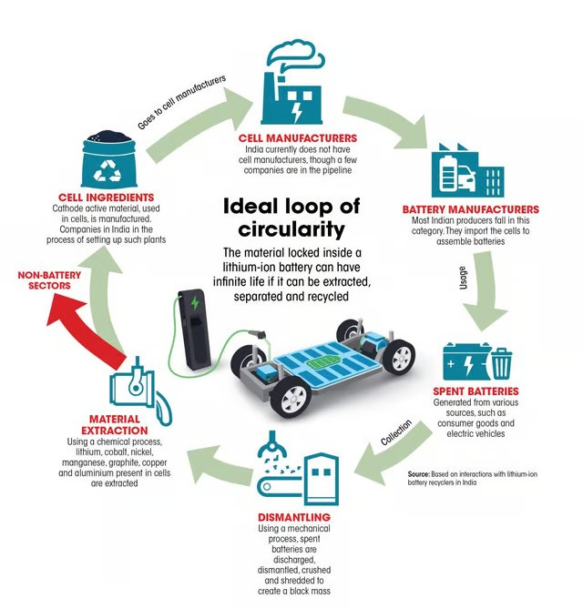
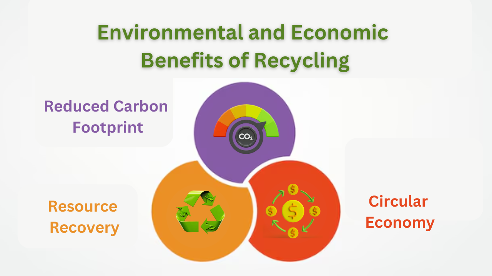
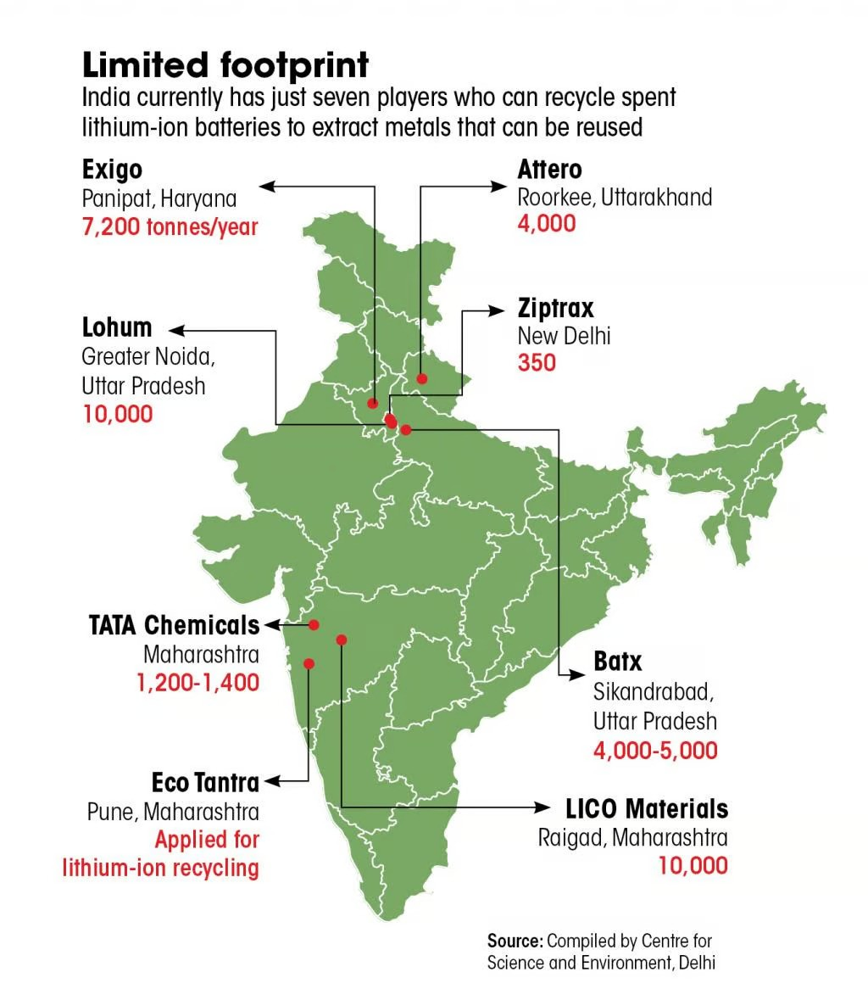

As India accelerates its transition to electric vehicles (EVs), the importance of lithium-ion battery recycling becomes increasingly evident. The country is on the brink of a significant transformation in its transportation sector, driven by the need for sustainable energy solutions.
However, the effective recycling of lithium-ion batteries is crucial not only for environmental sustainability but also for securing the raw materials needed for future battery production. This blog explores the critical role of lithium-ion battery recycling in India's EV revolution, along with the challenges and opportunities it presents.
The Growing Demand for Lithium-ion Batteries
India's EV market has witnessed exponential growth, with over a million electric vehicles sold in FY 2023 alone, marking a 50% increase from the previous year. As this trend continues, the country faces a looming challenge: what to do with the millions of lithium-ion batteries that will reach the end of their life cycle. By 2030, an estimated 128 GWh of lithium-ion batteries will be available for recycling, with approximately 46% originating from electric vehicles. This influx presents a unique opportunity for India to establish a robust recycling ecosystem that can support its burgeoning EV industry.

Environmental and Economic Benefits of Recycling
Recycling lithium-ion batteries offers numerous benefits:
- Resource Recovery: Effective recycling can recover up to 90% of valuable materials such as lithium, cobalt, nickel, and manganese. These materials are essential for new battery production and can significantly reduce dependence on imports.
- Reduced Carbon Footprint: Recycling processes can lower carbon emissions associated with battery production by up to 90%, contributing to India's broader climate goals.
- Circular Economy: Establishing a circular economy around lithium-ion batteries not only minimizes waste but also creates new business opportunities in the recycling sector. By reintroducing recycled materials into the supply chain, India can enhance its self-reliance in battery manufacturing.

Challenges Facing Lithium-ion Battery Recycling in India
Despite these advantages, several challenges hinder the development of an effective lithium-ion battery recycling framework in India:
- Lack of Infrastructure: Currently, India lacks a comprehensive nationwide battery disposal and recycling program. Most used batteries are processed by the unorganized sector or end up in landfills, posing environmental and health risks.
- Regulatory Gaps: While draft regulations like the Battery Waste Management Rules of 2022 have been introduced to mandate extended producer responsibility (EPR) and recovery targets, enforcement remains a challenge. The guidelines aim for a minimum recovery rate of 90% by 2027 and require that new batteries contain at least 20% recycled materials by 2030.
- Technological Limitations: There is currently limited capacity for high-end refining processes necessary for separating and recovering battery-grade materials. Most recyclers focus on pre-treatment methods that do not yield high-purity outputs.
Opportunities Ahead
The Indian government has recognized these challenges and is actively working to address them. Initiatives such as financial incentives for setting up recycling facilities and promoting public-private partnerships are crucial steps toward building a sustainable battery recycling ecosystem. Moreover, companies like LOHUM and BatX Energies are leading efforts to develop advanced recycling technologies that can efficiently recover valuable materials from end-of-life batteries.

As India moves forward with its electrification goals, education and awareness campaigns will be essential. Engaging EV owners and manufacturers about proper battery disposal methods will help ensure that retired batteries are returned to authorized recyclers rather than ending up in landfills.
Conclusion
The role of lithium-ion battery recycling is pivotal in supporting India's EV revolution. By overcoming existing challenges and leveraging opportunities within this sector, India can establish itself as a leader in sustainable battery management while simultaneously contributing to its ambitious climate goals. As the country continues on its path toward electrification, investing in robust recycling infrastructure will be key to ensuring a clean and sustainable future for transportation.